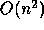
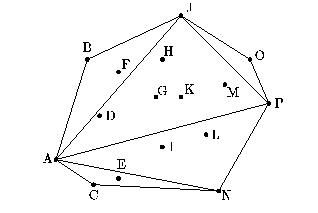
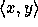

Our next example solves the planar convex hull problem: Given n points in a plane, find which of them lie on the perimeter of the smallest convex region that contains all points. This example shows another use of nested parallelism for divide-and-conquer algorithms. The algorithm we use is a parallel Quickhull [20], so named because of its similarity to the Quicksort algorithm. As with Quicksort, the strategy is to pick a ``pivot'' element, split the data based on the pivot, and recurse on each of the split sets. Also as with Quicksort, the pivot element is not guaranteed to split the data into equally sized sets, and in the worst case the algorithm requires

work, however in practice the algorithm is often very efficient.
Click on the image to see and run the code.
Figure 10 shows the code and an example of the Quickhull algorithm. The algorithm is based on the recursive routine hsplit. This function takes a set of points in the plane (

coordinates) and two points p1 and p2 that are known to lie on the convex hull and returns all the points that lie on the hull clockwise from p1 to p2, inclusive of p1, but not of p2. In Figure 10, given all the points [A, B, C, ..., P], p1 = A and p2 = P, hsplit would return the sequence [A, B, J, O]. In hsplit, the order of p1 and p2 matters, since if we switch A and P, hsplit would return the hull along the other direction [P, N, C].The hsplit function first removes all the elements that cannot be on the hull because they lie below the line between p1 and p2 (which we denote by p1-p2). This is done by removing elements whose cross product with the line between p1 and p2 is negative. In the case p1 = A and p2 = P, the points [B, D, F, G, H, J, K, M, O] would remain and be placed in the sequence packed. The algorithm now finds the point, pm, furthest from the line p1-p2. The point pm must be on the hull since as a line at infinity parallel to p1-p2 moves toward p1-p2, it must first hit pm. The point pm (J in the running example) is found by taking the point with the maximum cross-product. Once pm is found, hsplit calls itself twice recursively using the points (p1, pm) and (pm, p2) ((A, J) and (J, P) in the example). When the recursive calls return, hsplit flattens the result, thereby appending the two subhulls.
The overall convex-hull algorithm works by finding the points with minimum and maximum x coordinates (these points must be on the hull) and then using hsplit to find the upper and lower hull. Each recursive call has constant depth and O(n) work. However, since many points might be deleted on each step, the work could be significantly less. As with Quicksort, the worst case costs are W = O(n2) and D = O(n). For m hull points the best case times are O(log m) depth and O(n) work. It is hard to state the average case time since it depends on the distribution of the inputs. Other parallel algorithms for the convex-hull problem run in D = O(log n), and W = O(n) in the worst case [16], but have larger constants.